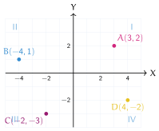

Apartado 8.1
Coordenadas cartesianas
Para localizar un punto en el plano se usan dos rectas numéricas perpendiculares llamadas ejes de coordenadas. El eje horizontal es el eje de abscisas (\(X\)) y el vertical, el eje de ordenadas (\(Y\)). Se cortan en el origen \(O(0,0)\).

8.1.1
Representa los puntos \(A(2,5)\), \(B(-3,4)\), \(C(-1,-1)\), \(D(0,-3)\), \(E(4,0)\) y \(F(5,-2)\) e indica en qué cuadrante o eje está cada uno.